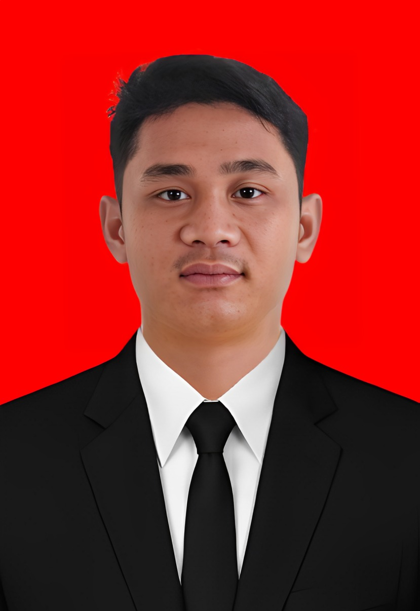

Selamat Datang di SIGAP
Panduan layanan keimigrasian, persyaratan, dan kosakata bahasa isyarat untuk mendukung komunikasi pelayanan.
Menu Utama
Tujuan dan referensi
Alur Pelayanan Paspor
01 Pendaftaran M-Paspor
Pemohon melakukan pendaftaran melalui aplikasi M-Paspor.
02 Pengisian Data, Jadwal & Pembayaran
Mengisi data, memilih lokasi/tanggal kedatangan, dan melakukan pembayaran.
03 Kedatangan ke Kantor Imigrasi
Datang sesuai lokasi dan tanggal dengan membawa persyaratan asli.
04 Pemeriksaan, Wawancara & Biometrik
Petugas memeriksa dokumen, melakukan wawancara dan mengambil data biometrik.
05 Tanda Terima Permohonan
Jika persyaratan lengkap, petugas memberikan tanda terima permohonan.
Persyaratan Paspor
Paspor Baru
Persyaratan dasar meliputi E-KTP, Kartu Keluarga, serta akta kelahiran/ijazah/buku nikah/surat baptis sesuai ketentuan.
Pergantian Paspor
Digunakan untuk permohonan pergantian paspor. Istilah resmi yang digunakan Kanim Jakarta Barat adalah pergantian paspor, bukan hanya “perpanjangan”.
Paspor Anak
Permohonan paspor untuk anak dengan persyaratan dan dokumen pendukung sesuai ketentuan yang berlaku.
Dokumen Dasar
E-KTP, Kartu Keluarga, dan dokumen pendukung sesuai jenis permohonan. Bawa dokumen asli dan salinannya sesuai ketentuan.
Layanan Keimigrasian
SIGAP merangkum kelompok layanan yang tercantum pada situs resmi Kantor Imigrasi Jakarta Barat, beserta beberapa layanan rinci yang ditemukan pada halaman resminya. Untuk persyaratan dan prosedur terbaru, pemohon tetap diarahkan ke sumber resmi.
🛂 Penerbitan Paspor
Paspor Baru, Pergantian Paspor, dan Paspor Anak. Pada halaman resmi juga terdapat ketentuan untuk paspor baru anak dan anak berkewarganegaraan ganda. Pengajuan paspor baru atau pergantian paspor dilakukan melalui M-Paspor sesuai ketentuan.
Sumber Paspor🪪 Izin Tinggal
Kelompok ini mencakup Izin Tinggal Kunjungan, Izin Tinggal Terbatas (ITAS), Izin Tinggal Tetap (ITAP), serta Izin Masuk Kembali. Halaman resmi juga memuat berbagai permohonan seperti perpanjangan ITAS dan alih status ITAS ke ITAP dengan persyaratan yang berbeda sesuai jenis pemohon.
Sumber Izin Tinggal📑 Administratif Keimigrasian
Kelompok layanan administratif yang tercantum pada situs resmi. Di dalam informasi layanan Kanim Jakarta Barat juga terdapat layanan rinci seperti Mutasi Paspor, Perubahan Data Paspor, dan Proof of Fund.
Lihat Informasi Resmi🇮🇩 Kewarganegaraan
Kanim Jakarta Barat juga menyediakan informasi layanan kewarganegaraan dengan beberapa skema, termasuk skema perkawinan campur dan non-perkawinan campur sesuai ketentuan yang berlaku.
Sumber Kewarganegaraan📣 Pengaduan
Pengaduan tercantum sebagai salah satu kelompok pelayanan pada situs resmi Kanim Jakarta Barat. Informasi dan kanal pengaduan dapat diperiksa melalui situs resmi.
Lihat Informasi Resmi🔎 Layanan Rinci yang Sudah Teridentifikasi
Mutasi Paspor · Perubahan Data Paspor · Perpanjangan ITAS · Alih Status ITAS ke ITAP · Izin Tinggal Kunjungan · Izin Tinggal Tetap · Izin Masuk Kembali.
Daftar ini merupakan ringkasan dari halaman layanan resmi yang telah ditelusuri, bukan pengganti ketentuan resmi.
Kamus Bahasa Isyarat
Kosakata dipilih untuk kebutuhan pelayanan. Status perlu validasi berarti belum boleh dianggap sebagai isyarat SIBI resmi.
Tentang SIGAP
Tujuan ▼
👤Pengembang SIGAP
